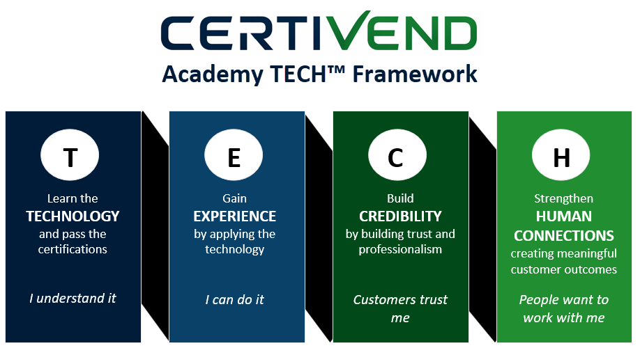

AH™ Approach
AH™ is a sustainable transformation I created... to reflect my experience with strategizing the best approach... to streamline operations, optimize workflows, and align people, processes, and technology.
A
AI and Automation
• Developed AI workflows that accelerated content development and scaled delivery.
• Designed proprietary AI-powered instructional design strategy that integrated AI across learning development lifecycle.
• Reduced development time for 2-hour instructor-led or eLearning program from ~ 70–130 hours to ~ 16 hours.
• Used AI to analyze learning requirements, gaps, design, and resources.
• Designed proprietary AI-powered instructional design strategy that integrated AI across learning development lifecycle.
• Reduced development time for 2-hour instructor-led or eLearning program from ~ 70–130 hours to ~ 16 hours.
• Used AI to analyze learning requirements, gaps, design, and resources.
B
Business Transformation
• Directed strategy, development, launch, and growth of CertiVend Academy.
• Developed end-to-end learning strategies connecting workforce capability, role readiness, certification, and scalable learning pathways.
• Translated business requirements and operational processes into learning solutions aligned with current and future-state performance.
• Developed end-to-end learning strategies connecting workforce capability, role readiness, certification, and scalable learning pathways.
• Translated business requirements and operational processes into learning solutions aligned with current and future-state performance.
C
Change Management
• Integrated knowledge, resources, practice, and performance support to help learners apply what they learned on the job.
• Prepared learners to transition into new roles, responsibilities, processes, and systems.
• Supported workforce adoption of new ways of working through structured learning and certification pathways.
• Prepared learners to transition into new roles, responsibilities, processes, and systems.
• Supported workforce adoption of new ways of working through structured learning and certification pathways.
D
Digital Solutions
• Created scalable learning pathways and onboarding systems.
• Evaluated and applied technology-enabled approaches to expand the reach, scalability, and effectiveness of learning.
• Integrated multimedia, assessments, learner reflection, and action-planning resources into digital learning ecosystems.
• Evaluated and applied technology-enabled approaches to expand the reach, scalability, and effectiveness of learning.
• Integrated multimedia, assessments, learner reflection, and action-planning resources into digital learning ecosystems.

E
Evaluation and Analytics
• Evaluated learning data to understand business impact.
• Measured knowledge, proficiency, application, performance, and business outcomes.
• Used performance and learning data to identify gaps and inform learning improvements.
• Measured knowledge, proficiency, application, performance, and business outcomes.
• Used performance and learning data to identify gaps and inform learning improvements.
F
Facilitation and Feedback
• Built learning experiences through collaboration with stakeholders responsible for workforce readiness and certification.
• Partnered with certification bodies, educational institutions, and business stakeholders.
• Supported continuous improvement of certification programs, learning pathways, and workforce development solutions.
• Partnered with certification bodies, educational institutions, and business stakeholders.
• Supported continuous improvement of certification programs, learning pathways, and workforce development solutions.
G
Governance
• Addressed copyright restrictions and appropriate use of learning materials.
• Established controls to maintain quality, consistency, compliance, and appropriate use of learning content. • Incorporated compliance requirements into learning design and development.
• Established controls to maintain quality, consistency, compliance, and appropriate use of learning content. • Incorporated compliance requirements into learning design and development.
H
Human Judgment
• Determined the knowledge and capabilities employees needed to perform successfully.
• Evaluated whether AI-generated content was accurate, relevant, appropriate, and instructionally sound.
• Used instructional design expertise to validate AI-assisted outputs.
• Evaluated whether AI-generated content was accurate, relevant, appropriate, and instructionally sound.
• Used instructional design expertise to validate AI-assisted outputs.